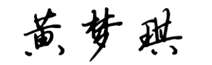
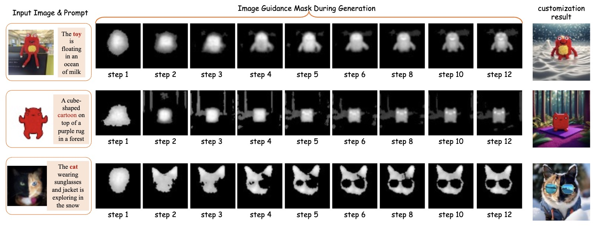
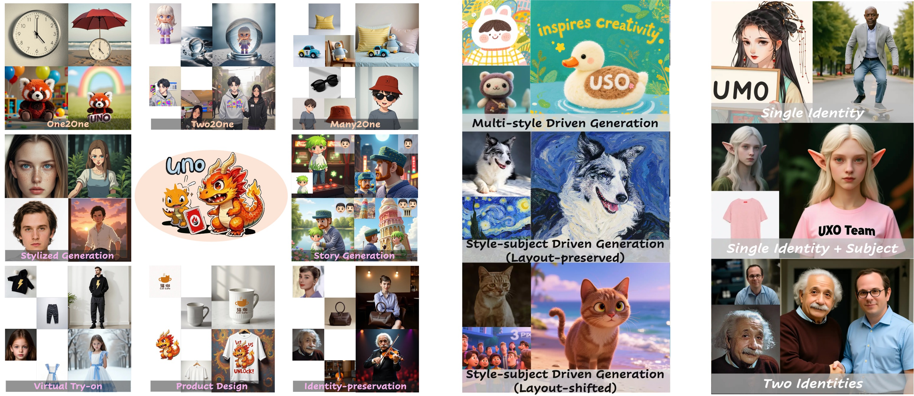

China Postdoctoral Science Foundation (CPSF)
Mengqi Huang

University of Science and Technology of China
Email: huangmq [AT] ustc.edu.cn
My research interests include deep generative models, image/video/3D generation, and unified multimodal models. I am the recipient of the Best Student Paper Award at ACM Multimedia 2022 as the first author. In 2025, I was awarded the First Prize of the Natural Science Award from the China Society of Image and Graphics (CSIG) and the Special Prize of the President Scholarship of the Chinese Academy of Sciences (CAS). I have also received funding from the First National Natural Science Foundation of China for Youth Student Fundamental Research (Ph.D. student). I was selected for top industry talent programs including the Alibaba, ByteDance, etc.
研究方向为图像、视频、3D等视觉内容生成和多模态生成-理解统一模型。 博士期间以第一作者获CCF-A类国际会议ACM Multimedia 2022最佳学生论文奖。获2025年中国图像图形学会自然科学一等奖; 获批首届国家自然科学基金青年学生基础研究项目（博士研究生）。获2025年中国科学院院长特别奖。25年校招入选阿里星（校招P7）、字节跳动头部人才计划（校招3-1）等。
Career Timeline
Funding
National Natural Science Foundation of China (NSFC)
Research on Text-Guided Long Video Generation based on Spatiotemporal Native Collaboration
首届青年学生基础研究项目（博士研究生）
Selected Publications Google Scholar Profile
2026
2025
2024
2023 & 2022
Towards Accurate Image Coding: Improved Autoregressive Image Generation With Dynamic Vector Quantization
CVPR 2023 Highlight, 2.5% of submitted papers
DSE-GAN: Dynamic Semantic Evolution Generative Adversarial Network for Text-to-Image Generation
ACM Multimedia 2022 Best Student Paper Award, 1/3009 of submitted papers
* Equal contribution. ✉ Corresponding author.
Awards & Honors
2025
CSIG Natural Science Award — First Prize
中国图像图形学会自然科学一等奖 · 《内生知识驱动的图像-文本语义关联》
CAS President Scholarship — Special Prize
中国科学院院长特别奖
Industry Recognition
25年校招入选阿里星（校招P7）、字节跳动头部人才计划（校招3-1）
2022
Best Student Paper Award
ACM Multimedia 2022 · First author · CCF-A
Industrial Research Experience
Intelligent Creation Department · July 2023 – July 2026
Wonderful 3 years at ByteDance

RealCustom: Narrowing Real Text Word for Real-Time Open-Domain Text-to-Image Customization
CVPR 2024 & IEEE TPAMI 2026
RealCustom enables subject-driven image generation while preserving text-based control. It represents reference subjects as real textual words to jointly optimize subject fidelity and prompt alignment.

UXO Series Research
The UXO series studies subject- and style-conditioned image generation, including controllability, disentangled reward modeling, and multi-identity consistency.